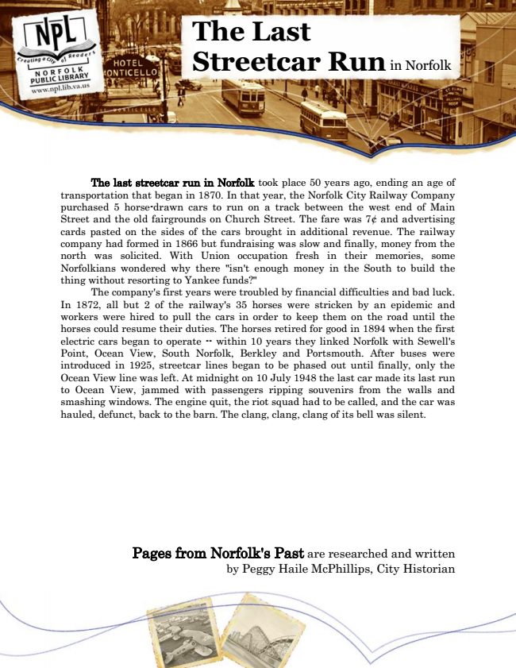

The Last Streetcar Run
in Norfolk
The last streetcar run in Norfolk took place 50 years ago, ending an age of transportation that began in 1870. In that year, the Norfolk City Railway Company purchased 5 horse-drawn cars to run on a track between the west end of Main Street and the old fairgrounds on Church Street. The fare was 7¢ and advertising cards pasted on the sides of the cars brought in additional revenue. The railway company had formed in 1866 but fundraising was slow and finally, money from the north was solicited. With Union occupation fresh in their memories, some Norfolkians wondered why there "isn't enough money in the South to build the thing without resorting to Yankee funds?"
The company's first years were troubled by financial difficulties and bad luck. In 1872, all but 2 of the railway's 35 horses were stricken by an epidemic and workers were hired to pull the cars in order to keep them on the road until the horses could resume their duties. The horses retired for good in 1894 when the first electric cars began to operate -- within 10 years they linked Norfolk with Sewell's Point, Ocean View, South Norfolk, Berkley and Portsmouth. After buses were introduced in 1925, streetcar lines began to be phased out until finally, only the Ocean View line was left. At midnight on 10 July 1948 the last car made its last run to Ocean View, jammed with passengers ripping souvenirs from the walls and smashing windows. The engine quit, the riot squad had to be called, and the car was hauled, defunct, back to the barn. The clang, clang, clang of its bell was silent.
Pages from Norfolk's Past are researched and written by Peggy Haile McPhillips, City Historian